Welcome to The Reliquary, a sanctuary of digital artifacts inscribed upon the eternal ledger and other planes. Here, art and technology converge in an alchemical union, creating timeless treasures for the ages.
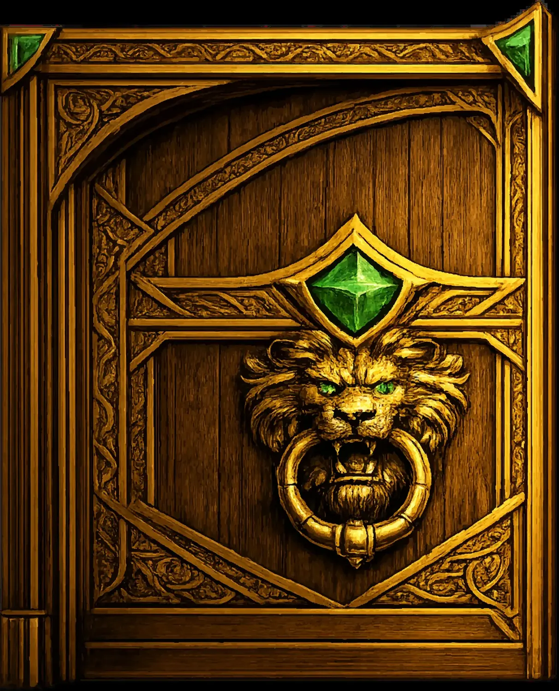
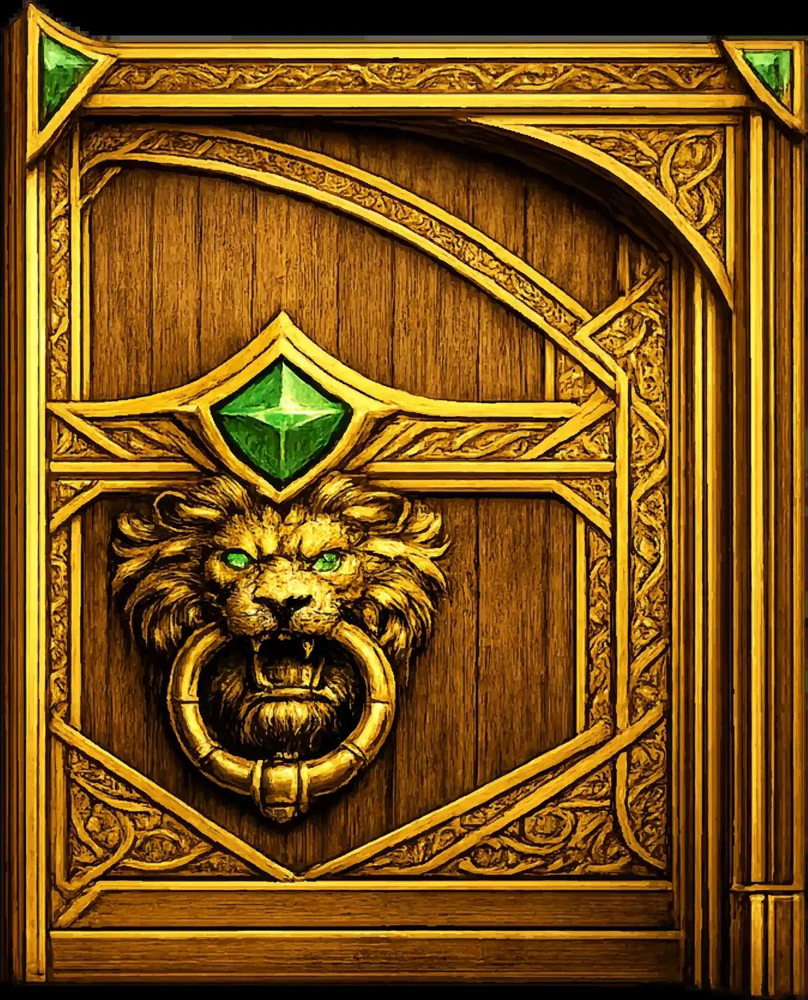
Scroll to reveal the sacred treasures within
Sacred works inscribed upon the blockchains
Websites, articles, collaborations & interactive experiences
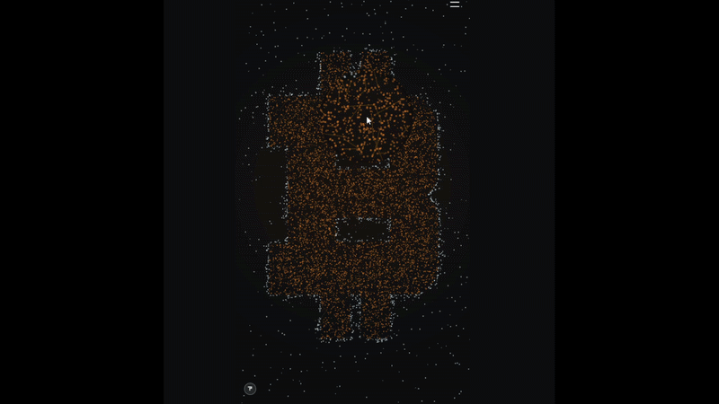
Live visualization breathing to the pulse of the Bitcoin blockchain
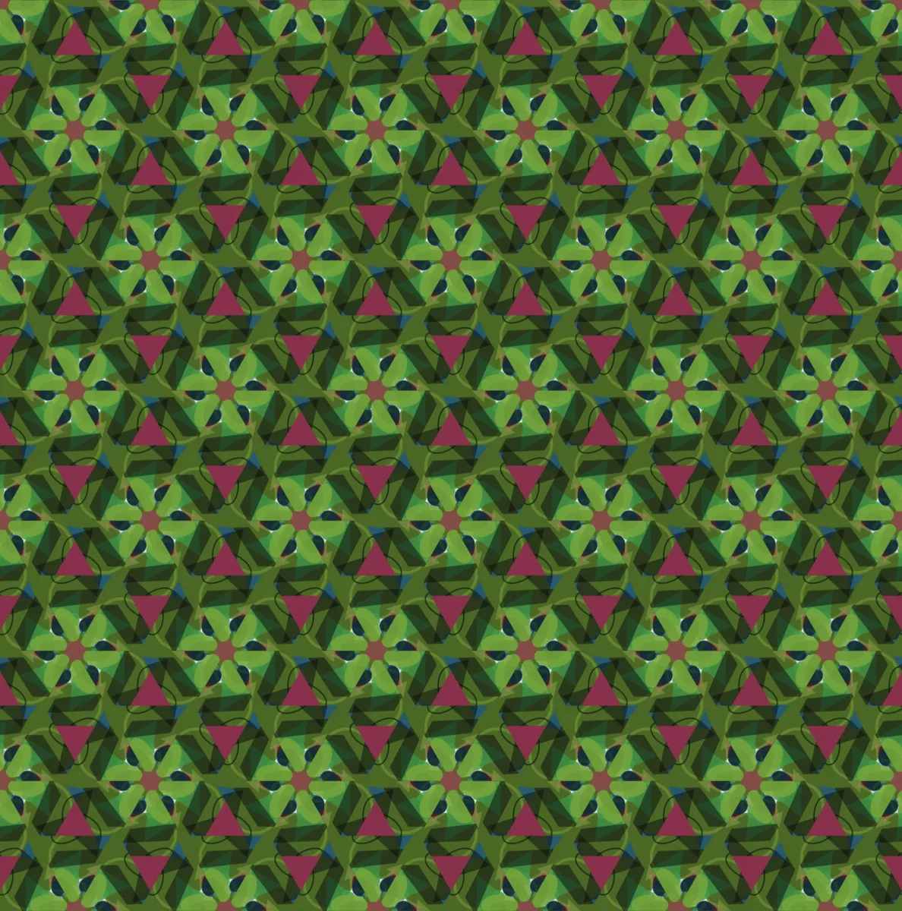
Interactive gallery to explore all 200 unique garden compositions
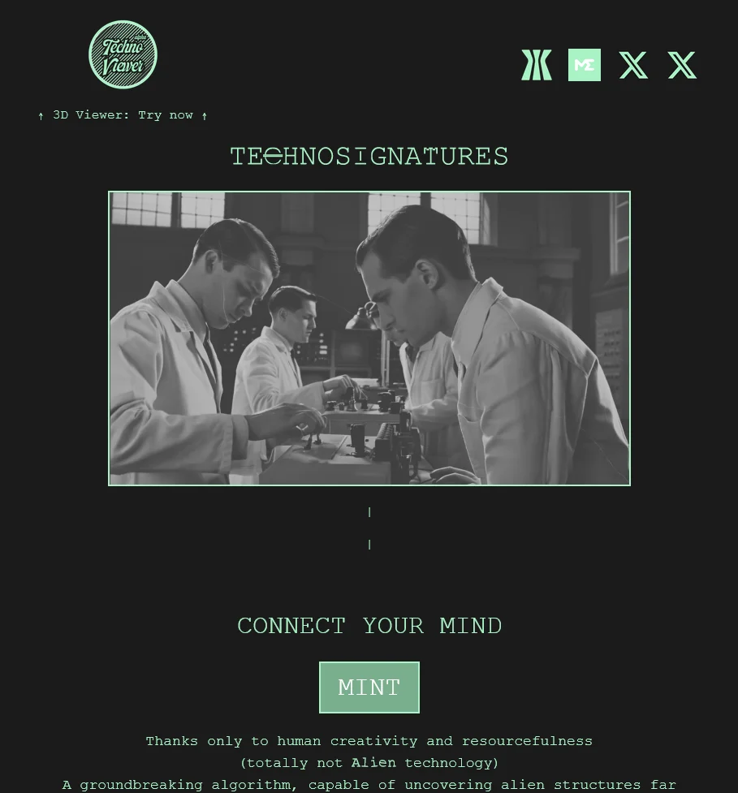
Immersive website with 3D viewer, easter eggs & custom narration
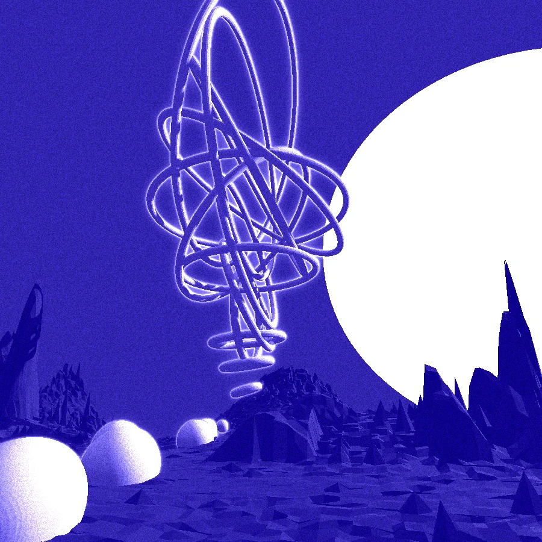
Explore your piece or any other in this amazing 3D view into a portion of space
Partner interview with the Gamma.io team
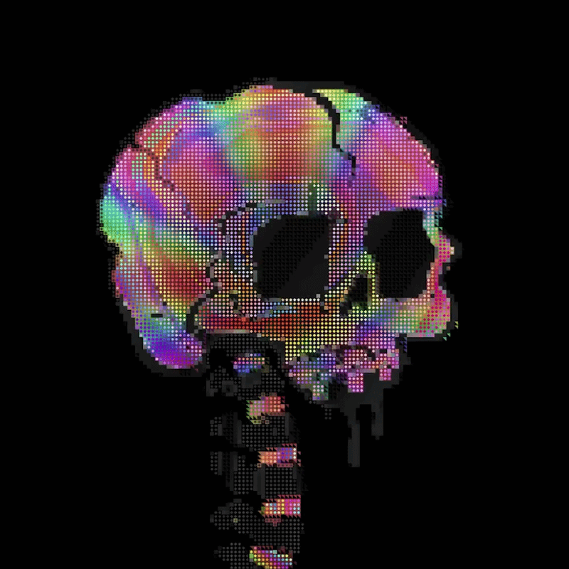
A collaborative art piece exploring light and shadow
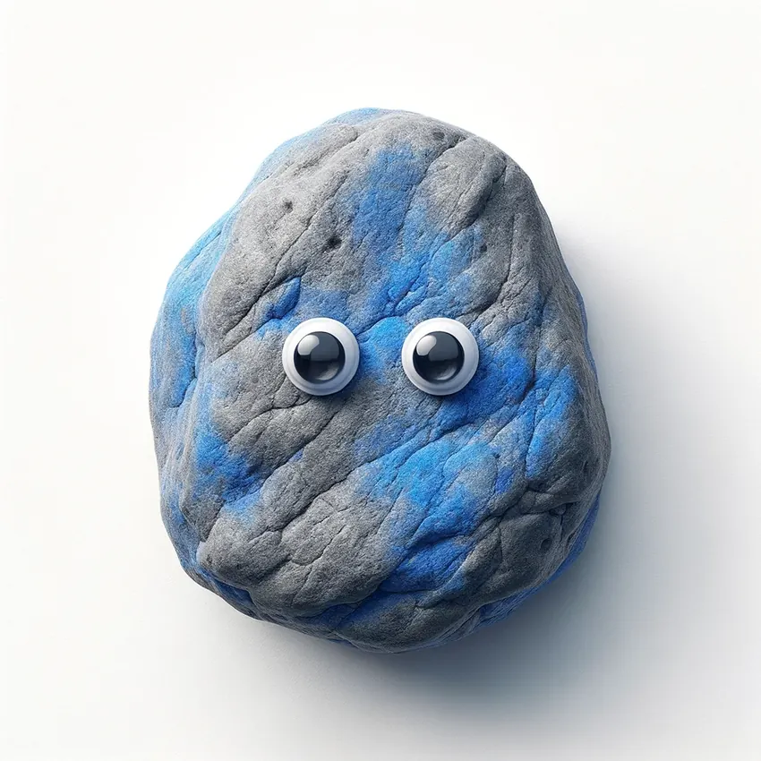
Interactive website for the Googly Rocks NFT collection on Base L2
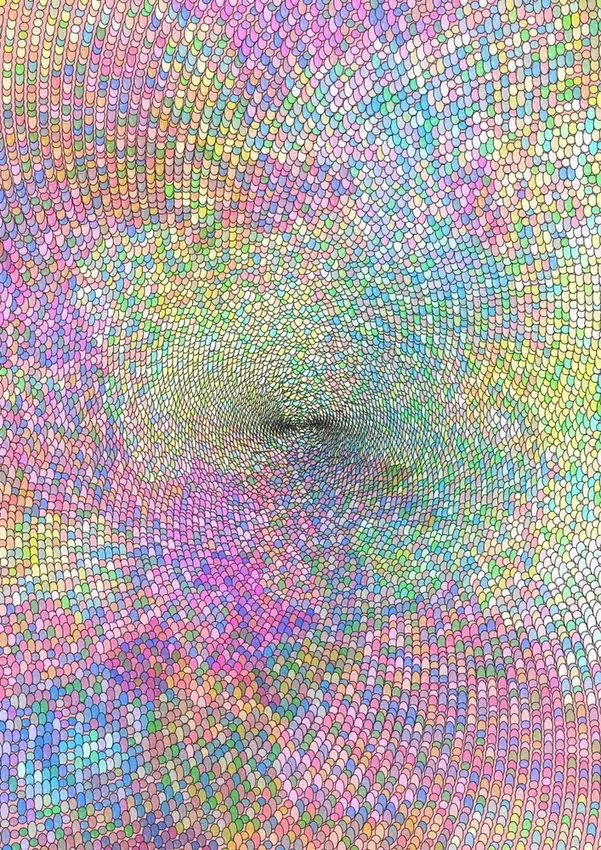
My debut and constraint-based generative art
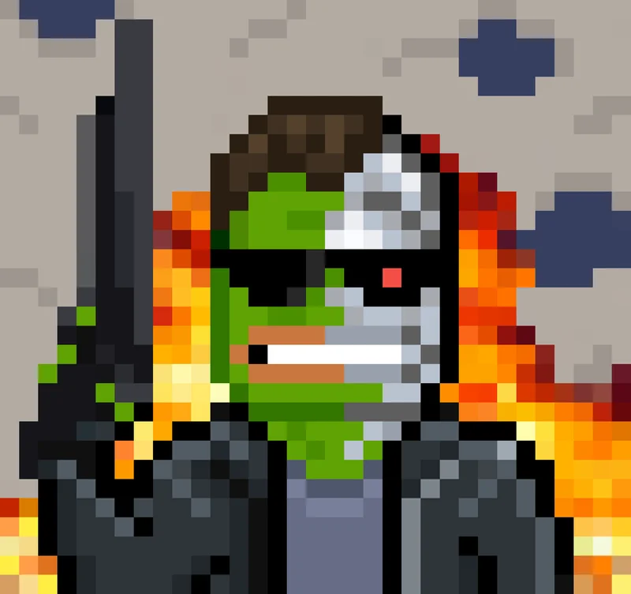
A fun collaborative project merging meme culture with generative art
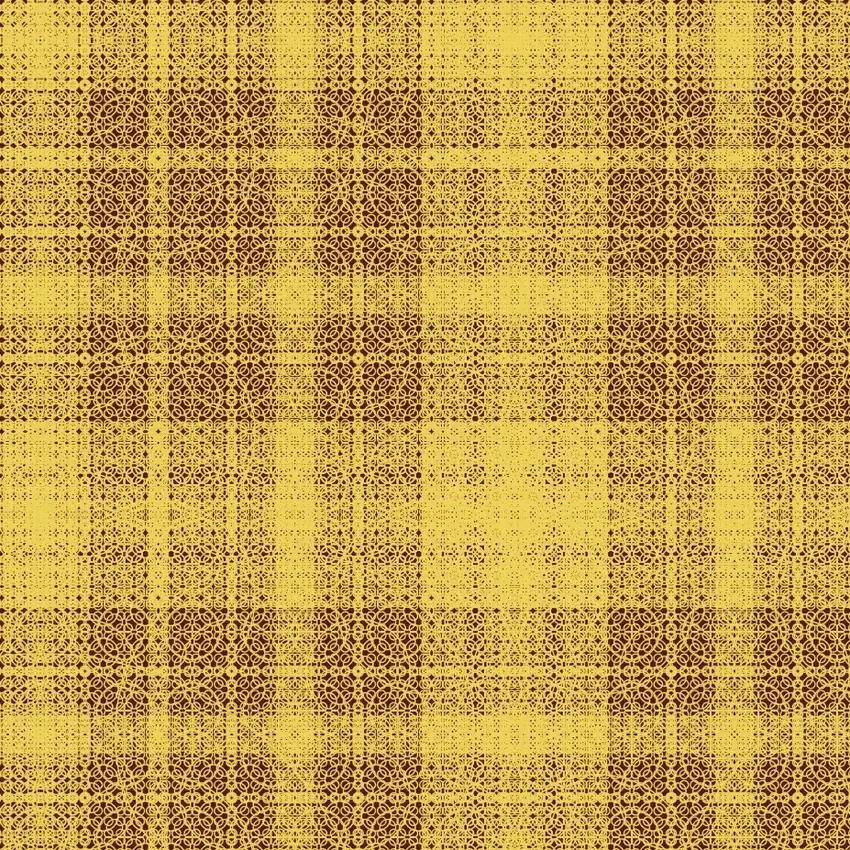
A dive into Akira's background, Aodach collection and the story behind the project
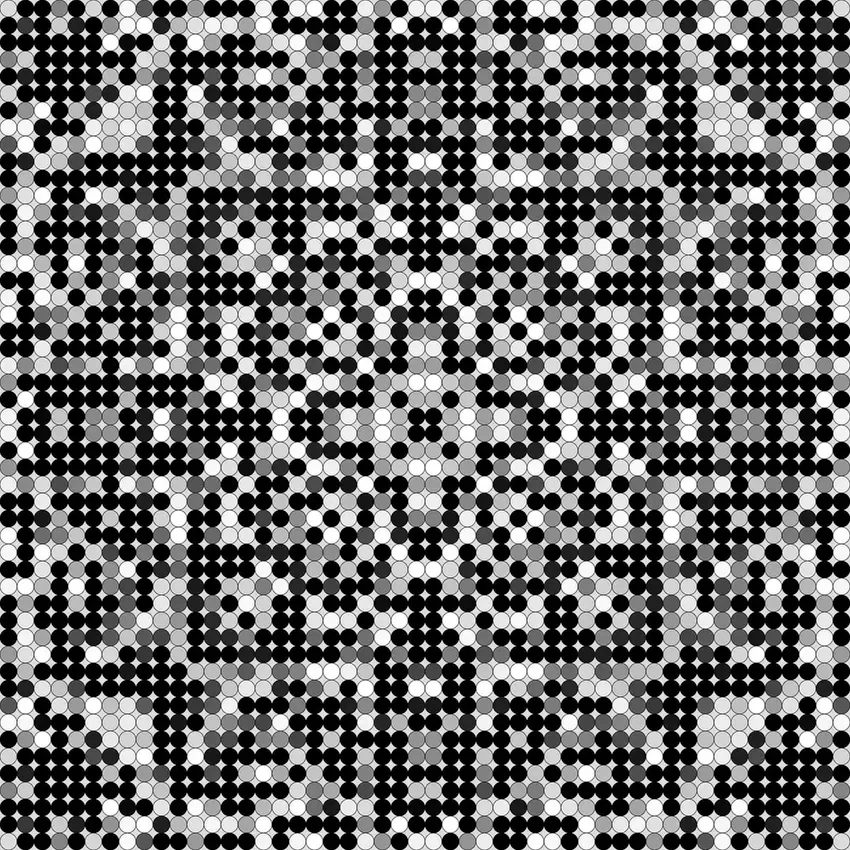
The beginning of a grand narrative - soon to be reinscribed on Bitcoin
Music videos and audio releases from the Googly Rocks universe
Visual treasures from the collection
The mind behind the creations
Akira Ishi is an anonymous artist based in France , their artistic philosophy centers on simplicity with depth, using minimal forms to express complex ideas. Their process is iterative and deeply personal, driven by the expressive power of code and a continued exploration of human self-awareness and our relationship with the world.
They began their creative journey in music—first violin, then drums where live performance shaped their understanding of emotional connection, now translated into visual storytelling and artworks. With a background in graphic design and web development, they merge aesthetics with code, starting from an idea, then sculpting and refining the algorithms to achieve the desired results.
Their journey reflects both creative and personal growth, building resilience through the act of sharing deeply personal work. Influenced more by ideas than aesthetics, their sense of originality lies in creating work that is unmistakably their own.
Akira releases works on multiple blockchain, but it is important to note that generative art on Bitcoin aligns naturally with their approach, where constraints become a catalyst for creativity. Each piece is conceived as a compact, on-chain fusion of art and technology, influenced by the raw, grassroots energy of the Bitcoin art community.
They are currently developing an ambitious long-term project that is already taking shape across nearly every work he releases, embedding hidden elements and secrets that will be unveiled when the time is right and that unifies their creations into a single evolving narrative.
Send forth your message
Speak your mind, brave traveler! Whether ye seek counsel on matters of art, wish to commission a sacred artifact, or simply desire to share tales from your own quest — the gates of this realm stand open.
For formal correspondence and matters of great import, dispatch your message via electronic scroll:
leakiraishi@gmail.comJoin the fellowship on X, send a DM (Distant Missive) and Akira shall answer it the quickest.
@leAkira_IshiFear not, for no quest is too small and no question too bold. The Round Table welcomes all who seek with pure intent. ⚔️
Answers to common inquiries
It's to be discovered later...
Generative art is created using algorithms and code, where the artist designs systems that produce unique visual outputs. Each piece emerges from the intersection of human creativity and computational precision—the artist sets the rules, and the code brings infinite variations to life.
Artifacts can be acquired through various marketplaces depending on the blockchain. Visit the Chronicles section to find links to each collection, or reach out directly through the Contact section for commissions.
Yes, custom commissions are welcomed. Use the contact form to describe your vision, and we shall discuss the possibilities of bringing your ideas to the eternal ledger.